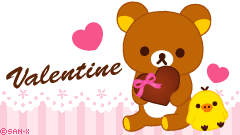

'Tis the Season for Cheesy One-Liners
It's February! It's my birth month and it has one of my favorite holidays: Valentine's Day!
Even when I was single until I was almost 25 years old, I always loved the holiday although I remember being pretty bitter about it when I was a teenager, but I digress. I love the colors from the soft pink pastel colors to the obnoxiously bright red and pink you can think of. The candy was also the best part. I loved the days when all of the kids was obligated to give each other Valentine's because I loved those little paper cards and the candies they would hold.
But enough with the introduction. The reason why I'm writing this blog entry is because I visited a different office to drop off some papers, and there was an entire wall of nerdy one-liners written on heart cut-outs and plastered all over the walls. I took the time to take a sticky note and write every single line I saw on those silly hearts, and I am going to share it with all of you.
Enjoy!
Click Rilakkuma's box of chocolates! |
|  |